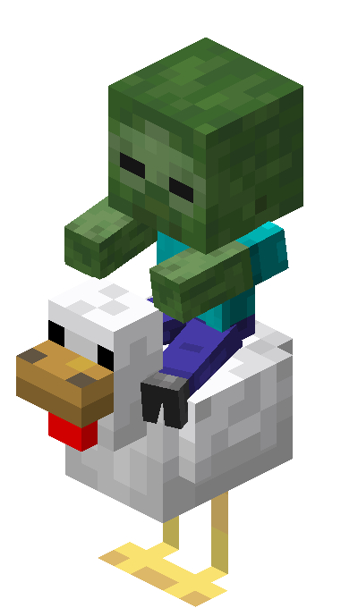

Jean Rafael Guilouski Wojcik

+55 (42) 99858-9919
Formação Acadêmica
-
2023 - Atual | Graduação em Ciência da Computação
Univerisade Estadual do Centro-Oeste (UNICENTRO)
Experiência
-
2023 - 2025 | Atuante no projeto E-Lixo
Extensão - UNICENTRO
-
2024 - Atual | Atuante no projeto Fábrica de Software
Extensão - UNICENTRO
Habilidades
- Programação: C++, Java, Typescript
- PostgreSQL
- Git
- Docker
- Redes e Infraestrutura
- Servidores Linux
Idiomas
- Português - Nativo
- Inglês - Intermediário
- Espanhol - Básico
- Ucraniano - Básico